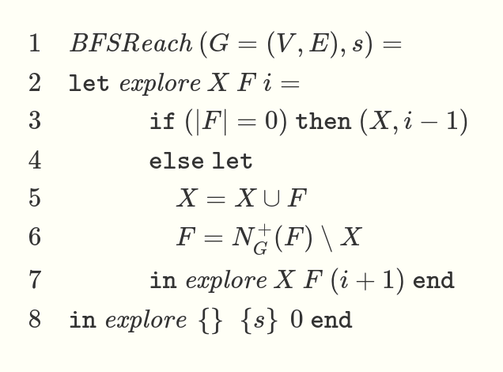

A summary: the paper in question talks about the theory of programming, what causes programs to become “complex” and hard to maintain, and proposes solutions towards that end. I disagree with the paper’s premises about what constitues programs that are hard to reason about.
The paper: Out of the Tar Pit by Ben Moseley and Peter Marks. For the optimal blog-reading experience, I recommend reading through section 7 before continuing below. It’s a bit of a stretch to call it a paper even though it has the same structure, it reads more like a blog post.
What I took away from it was the following argument: current languages and programming methodologies create more “complexity” than is necessary to actually solve problems, and a certain method of “Functional Relational Programming” can alleviate much of that complexity.
The authors are clearly biased in their argument. Just read this section on page 12 (emphasis preserved):
Power corrupts What we mean by this is that, in the absence of language enforced guarantees (i.e. restrictions on the power of the language) mistakes (and abuses) will happen. This is the reason that garbage collection is good — the power of manual memory management is removed. Exactly the same principle applies to state — another kind of power. In this case it means that we need to be very wary of any language that even permits state, regardless of how much it discourages its use (obvious examples are ML and Scheme). The bottom line is that the more powerful a language (i.e. the more that is possible within the language), the harder it is to understand systems constructed in it.
This is a blatant attack on the most common systems language known to be responsible for large classes of bugs: (you already know what language I’m talking about) C and C++.
Now, I do agree that the manual memory management done by C and C++ is horrible in terms of safety guarantees. However, I very much disagree with the assertion that “state should be avoided at all costs.”
The authors make a later claim about how allowing stateful code leads to complicated informal reasoning. On the contrary, I postulate that for many algorithms, a state-based approach makes the most sense. An example given in the CMU 2023 discord was the BFS algorithm. A traditional approach is as follows: use a stateful queue of (node, depth) items and a set of explored nodes. The queue and set woudl be initialized with the starting node. While there are nodes in the queue, pop a node, add it to the explored set, and push all unexplored neighbors back on the queue. This makes sense to me and many other programmers used to thinking imperatively. Heck, I’d argue that, with explanation of the motivation behind the algorithm, it would make sense to non-programmers as well.
Now consider the functional approach. You either have an unreadable mess like

… or you end up re-implementing a mutable state with immutable arguments and a tail-recursive function.
Now, this is just one example. I concede that there are many other algorithms better implemented in a functional style. That doesn’t necessarily mean we should restrict the language we program in to be nigh-unusable as to guarantee safety. Performance is important too, although nowadays less micro-optimizations (those are better taken care of by a smart compiler or library authors) and more algorithm design. If you can’t write a smart algorithm due to restrictions by the language, then the benefits of safety are less clear (to me).
In any case, I don’t think the authors are necessarily concerned with performance at all, and consider it a secondary goal at best, as evidenced by the following quotes (page 27):
It is worth noting that because typically the informal requirements will not mention concurrency, that too is normally of an accidental nature. In an ideal world we can assume that finite (stateless) computations take zero time and as such it is immaterial to a user whether they happen in sequence or in parallel.
(page 36):
It is worth noting in particular the risks of “designing for performance”. The dangers of “premature optimisation” are as real as ever — there can be no comparison between the diculty of improving the performance of a slow system designed for simplicity and that of removing complexity from a complex system which was designed to be fast (and quite possibly isn’t even that because of myriad ineciencies hiding within its complexity).
I agree with the second more than the first, but my point still is that the types of languages the authors advocate for (Functional Programming, Logic Programming) and the types of language constructs they wish to minimize (if statements, loops, stateful behavior) by themselves will not lead to better code. It might make code that’s easier for mathematicians to reason about and prove “correctness” of, whatever that means, but it will not make the code simpler by any margin.
Another key point I’d like to make before I wrap this up: Functional and Logic programming do not capture they way that computers operate in the same way that Imperative programming does. This might be a niche view, but I believe it is necessary to understand how computers work if one wishes to program them. That view seems to have persisted in computer science education thus far, where imperative languages are taught to beginners, probably as a remnant of when programming was more of an engineering discipline.
Having been exposed to Functional Programming, I think that knowledge of its techniques are sorely needed in computer science education. Writing safe, provable, understandable code is a worthy goal. I remain unconvinced that the “Functional Relational Approach” is the best way to go about this.
In case you haven’t had enough of Functional Programming shills spouting techical jargon at you, just read the Wikipedia article on Monads. I mean seriously, who thought this was a a good explanation for people who don’t understand it already?